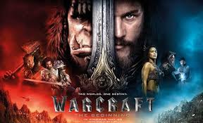

WARCRAFT
Warcraft IMDb 6,8/10 Rotten Tomatoes 28% Warcraft is a 2016 American action fantasy film directed by Duncan Jones and written by Charles Leavitt and Jones. Based on the video game series of the same name, the film stars Travis Fimmel, Paula Patton, Ben Foster, Dominic Cooper, Toby Kebbell, Ben Schn… IMDb Wikipedia Twitter Official site Facebook Release date: 10 Jun 2016 (United States) Director: Duncan Jones Language: English Summary: 2016 · 2hr 3min · Fantasy/Adventure Costume designer: Mayes C. Rubeo Music by: Ramin Djawadi